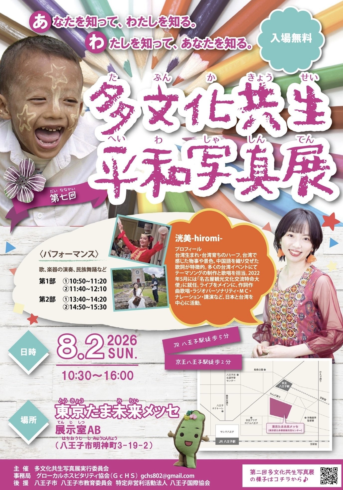
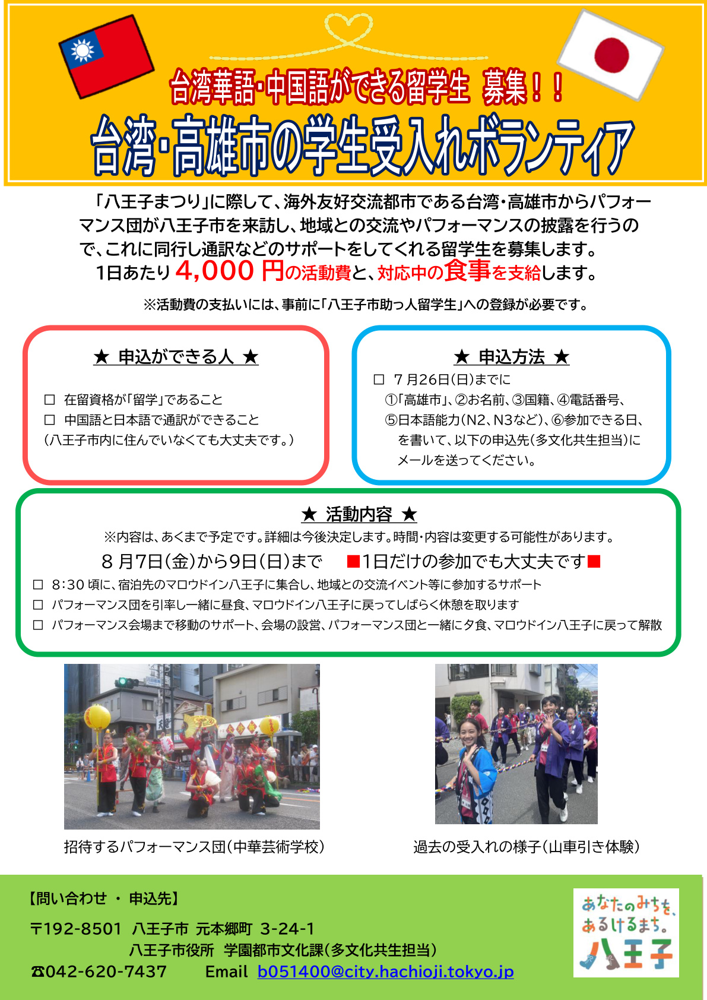
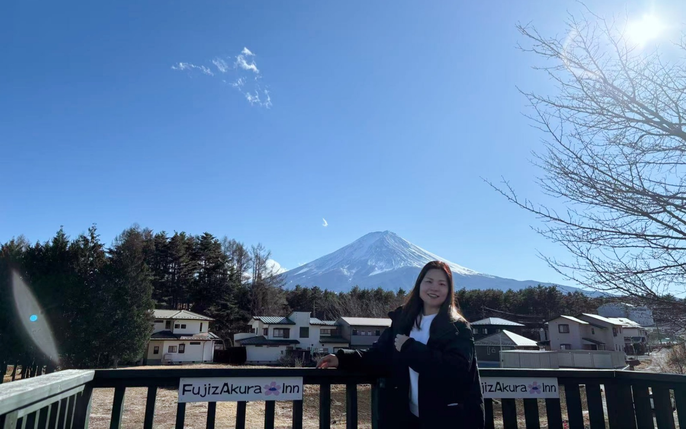

ボランティア活動

高尾山観光案内ボランティア
2025年4月頃
高尾山での観光案内ボランティア。英語で登山道を案内するなど、来客対応とチーム連携を経験しました。
本活動は、八王子市の広報紙『広報はちおうじ』2025年4月15日号に掲載されました。
- 簡単な英語で、外国人観光客へ登山道を案内
- ボランティアチーム内の連携
- 地域への貢献 · 接客経験
- 市広報への掲載（公的な活動記録）

八王子まつり · 神輿担ぎボランティア
2025年7月
地域のお祭りに参加。神輿担ぎを通じて、地域コミュニティとの関わりを深めました。
- 地域祭りへの参加 · チームワーク
- 日本の地域文化への理解

台湾・高雄市学生受入れボランティア
2025年8月
台湾・高雄市からの学生受入れに関するボランティア。国際交流・異文化コミュニケーションの経験。
- 国際交流 · 異文化理解
- ボランティア精神 · イベント支援
- 相手の話を聞き、分かりやすく伝える練習

第七回 多文化共生 平和写真展 ボランティア
2026年8月2日（日）8:30〜14:15 · 参加予定
東京たま未来メッセ（八王子市）で開催される平和・多文化共生写真展のボランティア。入場無料の地域イベントで、写真・文化展示・パフォーマンスの運営支援に参加します。
- 多文化共生 · 平和・国際理解イベントの運営支援
- 八王子市・教育委員会・国際協会後援の地域貢献
- 来場者対応 · チームでの会場サポート

台湾・高雄市学生受入れボランティア（八王子まつり）
2026年8月7日（金）〜9日（日）· 参加予定
八王子まつりの際、海外友好交流都市・台湾高雄市から来訪するパフォーマンス団（中華芸術学校）に同行し、中国語・日本語の通訳や移動・会場設営などのサポートを行うボランティアです。八王子市「助っ人留学生」としての地域・国際交流活動です。
- 中国語⇔日本語の通訳サポート
- パフォーマンス団の引率 · 昼食・夕食の同行
- 会場への移動支援 · 会場設営の手伝い
- 地域交流イベントへの参加サポート
- 多文化共生 · 姉妹都市交流への継続参加（2025年に続き）
主催・申込：八王子市役所 学園都市文化課（多文化共生担当）· 募集チラシあり
登山 · チャレンジ

富士山登山
2026年8月16日（土）· 参加予定 · 山小屋予約済み
日本最高峰・富士山への登山に挑戦予定。日程を決め、山小屋を事前予約して安全な計画で臨みます。高尾山での案内経験を活かし、準備・体力・安全管理を意識して取り組みます。
写真：2025年2月、河口湖にて撮影
- 目標設定と事前計画（日程・ルート・山小屋予約）
- 安全意識 · 体力づくり · 登山マナー
- 高尾山ボランティアからの継続的な登山経験
面接で話せるポイント
- 高尾山案内 — 簡単な英語で登山道案内／『広報はちおうじ』2025年4月15日号に掲載
- 祭りボランティア — 地域貢献、八王子での生活と関わり
- 台湾交流（2025）— 異文化コミュニケーション、多言語環境での調整
- 平和写真展 — 多文化共生・平和をテーマにした地域イベントへの継続参加
- 台湾・高雄受入れ（2026・八王子まつり）— 中日通訳、引率・会場サポート、姉妹都市交流の継続
- 富士山登山 — 計画・山小屋予約・安全意識で目標に挑む（2026年8月16日予定）